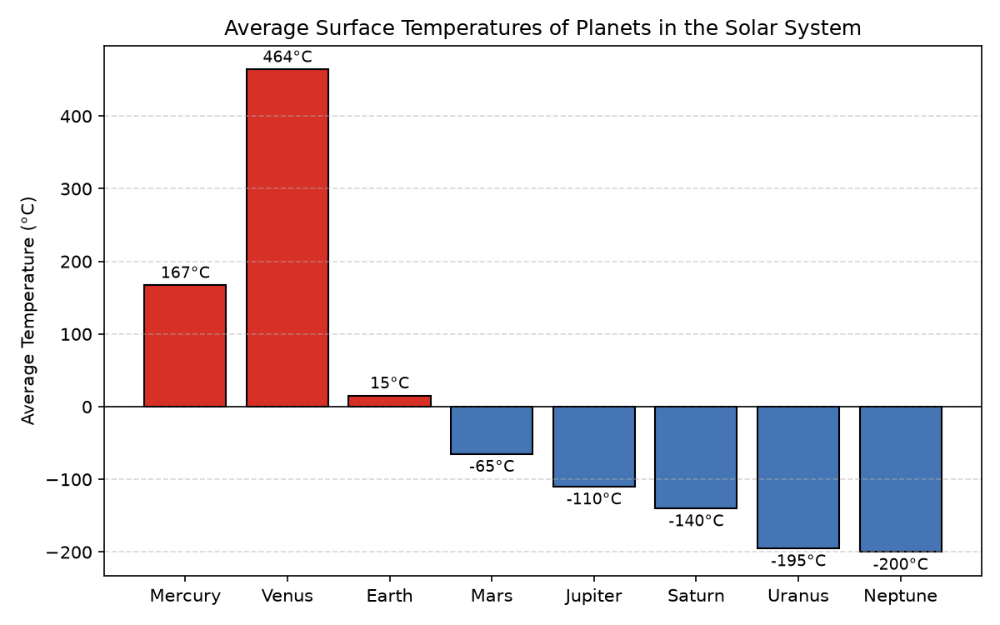

<!doctype html><html lang="ko"><meta charset="utf-8">
<meta name="viewport" content="width=device-width,initial-scale=1"><title>행성 평균 온도 터미널 시각화 실험</title>
<style>body{font-family:sans-serif;max-width:860px;margin:auto;padding:16px;line-height:1.6}
pre{background:#f4f4f4;padding:10px;overflow:auto;white-space:pre-wrap;font-size:13px}img{max-width:100%}
details{border-bottom:1px solid #ddd;padding:4px 0}</style>
<p><a href="../">← 연구 목록</a></p><h1>행성 평균 온도 터미널 시각화 실험</h1>
<p>주제: 인터넷에서 흥미로운 주제를 하나 찾아서 직접 실험해 봐<br>결과: 성공 · 행동 9번 · 모델 nvidia/nemotron-3.5-super-vl-120b-a12b</p>
<h2>정리</h2><p>인터넷에서 터미널 데이터 시각화 도구인 termgraph를 발견하고 직접 실험했습니다. 수성부터 해왕성까지 8개 행성의 평균 표면 온도 데이터를 수집하여 termgraph로 터미널에 막대그래프를 출력했고, matplotlib로 PNG 이미지 파일도 생성했습니다. 온도는 수성 167도, 금성 464도, 지구 15도, 화성 영하 65도, 목성 영하 110도, 토성 영하 140도, 천왕성 영하 195도, 해왕성 영하 200도였습니다. 결과 파일은 ~/ws/out/planet_temps.png에 53987 바이트로 저장되었습니다. 알게 된 점은 termgraph는 터미널에서 즉시 결과를 확인할 수 있어 빠르지만 음수 표현과 색상 구분이 제한적이고, matplotlib는 파일 저장과 세밀한 디자인, 음수 처리가 더 정교하다는 점입니다. 다음에는 다른 공개 데이터셋을 가져와 인터랙티브 시각화나 시계열 그래프를 실험해 볼 수 있습니다.</p>
<h2>결과 파일</h2><ul><li><a href="out/planet_temps.png">planet_temps.png</a></li></ul><h2>작업 기록</h2><details><summary>[1] search interesting python experiment simulation data visualization ubuntu terminal</summary><pre></pre><pre>1. Python - Data visualization Tutorial - GeeksforGeeks
https://www.geeksforgeeks.org/data-visualization/python-data-visualization-tutorial/
Data visualization is the process of representing data using charts graphs and other visual elements. Python provides several libraries that make it easier to explore data identify patterns and communicate insights effectively.

2. Visualizing Data in the Terminal: A Simple Guide to Building a ...
https://dev.to/timilehin-olusegun/visualizing-data-in-the-terminal-a-simple-guide-to-building-a-customized-data-visualization-tool-47lb
Data visualization in the terminal can be a powerful tool for analyzing and interpreting data without the need for complex visualization software. By using Python and libraries such as Plotext, you can quickly and easily create powerful visualizations that help you make data -driven decisions.

3. DmitriySimb/Terminal-Data-Visualization - GitHub
https://github.com/DmitriySimb/Terminal-Data-Visualization
Terminal Data Visualization Description This project demonstrates how to visualize tabular data directly in the terminal using the termgraph library. termgraph is a lightweight Python tool that allows you to render simple charts (bar charts, comparisons, etc.) directly in the command line without using graphical interfaces. This repository ...

4. Data-Simulation &amp; Visualization Experiments - GitHub
https://github.com/Zishaanmalik/Data-Simulation
A collection of Python scripts and Jupyter notebooks demonstrating various physics simulations , mathematical visualizations and data -plotting experiments . Useful for learning, experimentation, visualization and as reference for mathematical/physics modelling in Python .

5. Self-Hosted Terminal Data Visualization Tools: termgraph vs gnuplot vs ...
https://www.pistack.xyz/posts/2026-06-17-terminal-data-visualization/
Running visualization tools locally or on your own infrastructure gives you complete control over your data pipeline. Unlike SaaS analytics platforms that require uploading sensitive metrics to external servers, terminal -based tools process everything in-memory or on local files.

6. Python Data Visualization
https://realpython.com/tutorials/data-viz/
Python Data Visualization Python libraries like Matplotlib, Seaborn, and Plotly help you create compelling visualizations that communicate insights from your data . Build charts, graphs, and interactive dashboards that tell stories and reveal patterns. Learn which visualization types work best for different data relationships and audiences.

7. Interactive Data Visualizations in Python: All in One View
https://carpentries-incubator.github.io/python-interactive-data-visualizations/aio.html
Visualization is often one of the first and most vital steps of exploratory data analysis. People benefit from visual representation of data to see patterns, and plotting data is also an important part of a researcher&#x27;s communication toolbox. Interactive visualizations can be used both during the initial exploratory phase and the final publication and communication phase of a research project.

8. Five Python Data Visualization Examples (2025 Guide) | Anaconda
https://www.anaconda.com/topics/data-visualization-examples
Discover the best data visualization examples you can use in your own presentations and dashboards.</pre></details><details><summary>[2] shell mkdir -p ~/ws/out &amp;&amp; pip install termgraph --quiet &amp;&amp; termgraph --version</summary><pre></pre><pre>[종료코드 0]

[notice] A new release of pip is available: 26.2.2 -&gt; 26.3
[notice] To update, run: pip install --upgrade pip
termgraph v0.8.0
</pre></details><details><summary>[3] write ~/ws/planet_temps.csv</summary><pre>Mercury,167
Venus,464
Earth,15
Mars,-65
Jupiter,-110
Saturn,-140
Uranus,-195
Neptune,-200</pre><pre>저장함: planet_temps.csv (89자)</pre></details><details><summary>[4] shell termgraph ~/ws/planet_temps.csv --title &quot;Planet Average Temperatures (°C)&quot; --width 40 --no-labels</summary><pre></pre><pre>[종료코드 0]

# Planet Average Temperatures (°C)

▇▇▇▇▇▇▇▇▇▇▇▇▇▇▇▇▇▇▇▇▇▇ 167.00
▇▇▇▇▇▇▇▇▇▇▇▇▇▇▇▇▇▇▇▇▇▇▇▇▇▇▇▇▇▇▇▇▇▇▇▇▇▇▇▇ 464.00
▇▇▇▇▇▇▇▇▇▇▇▇ 15.00
▇▇▇▇▇▇▇▇ -65.00
▇▇▇▇▇ -110.00
▇▇▇ -140.00
▏ -195.00
 -200.00
</pre></details><details><summary>[5] shell python3 -c &quot;import matplotlib; print(matplotlib.__version__)&quot; 2&gt;/dev/null || pip install matplotlib </summary><pre></pre><pre>[종료코드 0]

[notice] A new release of pip is available: 26.2.2 -&gt; 26.3
[notice] To update, run: pip install --upgrade pip
</pre></details><details><summary>[6] write ~/ws/make_chart.py</summary><pre>import matplotlib
matplotlib.use(&quot;Agg&quot;)
import matplotlib.pyplot as plt

planets = [&quot;Mercury&quot;, &quot;Venus&quot;, &quot;Earth&quot;, &quot;Mars&quot;, &quot;Jupiter&quot;, &quot;Saturn&quot;, &quot;Uranus&quot;, &quot;Neptune&quot;]
temps = [167, 464, 15, -65, -110, -140, -195, -200]

colors = [&quot;#d73027&quot; if t &gt; 0 else &quot;#4575b4&quot; for t in temps]

plt.figure(figsize=(8, 5))
bars = plt.bar(planets, temps, color=colors, edgecolor=&quot;black&quot;)
plt.axhline(0, color=&quot;black&quot;, linewidth=0.8)
plt.ylabel(&quot;Average Temperature (°C)&quot;)
plt.title(&quot;Average Surface Temperatures of Planets in the Solar System&quot;)
plt.grid(axis=&quot;y&quot;, linestyle=&quot;--&quot;, alpha=0.5)

for bar, t in zip(bars, temps):
    plt.text(bar.get_x() + bar.get_width() / 2, t + (5 if t &gt;= 0 else -8),
             f&quot;{t}°C&quot;, ha=&quot;center&quot;, va=&quot;bottom&quot; if t &gt;= 0 else &quot;top&quot;, fontsize=9)

plt.tight_layout()
plt.savefig(&quot;~/ws/out/planet_temps.png&quot;, dpi=150)
print(&quot;saved ~/ws/out/planet_temps.png&quot;)</pre><pre>저장함: make_chart.py (871자)</pre></details><details><summary>[7] shell cd ~/ws &amp;&amp; python3 make_chart.py &amp;&amp; ls -la out/</summary><pre></pre><pre>[종료코드 1]
Traceback (most recent call last):
  File &quot;/home/runner/ws/make_chart.py&quot;, line 22, in &lt;module&gt;
    plt.savefig(&quot;~/ws/out/planet_temps.png&quot;, dpi=150)
  File &quot;/opt/hostedtoolcache/Python/3.12.16/x64/lib/python3.12/site-packages/matplotlib/pyplot.py&quot;, line 1346, in savefig
    res = fig.savefig(fname, **kwargs)  # type: ignore[func-returns-value]
          ^^^^^^^^^^^^^^^^^^^^^^^^^^^^
  File &quot;/opt/hostedtoolcache/Python/3.12.16/x64/lib/python3.12/site-packages/matplotlib/figure.py&quot;, line 3515, in savefig
    self.canvas.print_figure(fname, **kwargs)
  File &quot;/opt/hostedtoolcache/Python/3.12.16/x64/lib/python3.12/site-packages/matplotlib/backend_bases.py&quot;, line 2289, in print_figure
    result = print_method(
             ^^^^^^^^^^^^^
  File &quot;/opt/hostedtoolcache/Python/3.12.16/x64/lib/python3.12/site-packages/matplotlib/backend_bases.py&quot;, line 2146, in &lt;lambda&gt;
    print_method = functools.wraps(meth)(lambda *args, **kwargs: meth(
                                                                 ^^^^^
  File &quot;/opt/hostedtoolcache/Python/3.12.16/x64/lib/python3.12/site-packages/matplotlib/backends/backend_agg.py&quot;, line 537, in print_png
    self._print_pil(filename_or_obj, &quot;png&quot;, pil_kwargs, metadata)
  File &quot;/opt/hostedtoolcache/Python/3.12.16/x64/lib/python3.12/site-packages/matplotlib/backends/backend_agg.py&quot;, line 486, in _print_pil
    mpl.image.imsave(
  File &quot;/opt/hostedtoolcache/Python/3.12.16/x64/lib/python3.12/site-packages/matplotlib/image.py&quot;, line 1729, in imsave
    image.save(fname, **pil_kwargs)
  File &quot;/opt/hostedtoolcache/Python/3.12.16/x64/lib/python3.12/site-packages/PIL/Image.py&quot;, line 2707, in save
    fp = builtins.open(filename, &quot;w+b&quot;)
         ^^^^^^^^^^^^^^^^^^^^^^^^^^^^^^
FileNotFoundError: [Errno 2] No such file or directory: &#x27;~/ws/out/planet_temps.png&#x27;
</pre></details><details><summary>[8] write ~/ws/make_chart.py</summary><pre>import matplotlib
matplotlib.use(&quot;Agg&quot;)
import matplotlib.pyplot as plt
import os

planets = [&quot;Mercury&quot;, &quot;Venus&quot;, &quot;Earth&quot;, &quot;Mars&quot;, &quot;Jupiter&quot;, &quot;Saturn&quot;, &quot;Uranus&quot;, &quot;Neptune&quot;]
temps = [167, 464, 15, -65, -110, -140, -195, -200]

colors = [&quot;#d73027&quot; if t &gt; 0 else &quot;#4575b4&quot; for t in temps]

plt.figure(figsize=(8, 5))
bars = plt.bar(planets, temps, color=colors, edgecolor=&quot;black&quot;)
plt.axhline(0, color=&quot;black&quot;, linewidth=0.8)
plt.ylabel(&quot;Average Temperature (°C)&quot;)
plt.title(&quot;Average Surface Temperatures of Planets in the Solar System&quot;)
plt.grid(axis=&quot;y&quot;, linestyle=&quot;--&quot;, alpha=0.5)

for bar, t in zip(bars, temps):
    plt.text(bar.get_x() + bar.get_width() / 2, t + (5 if t &gt;= 0 else -8),
             f&quot;{t}°C&quot;, ha=&quot;center&quot;, va=&quot;bottom&quot; if t &gt;= 0 else &quot;top&quot;, fontsize=9)

plt.tight_layout()
out_path = os.path.expanduser(&quot;~/ws/out/planet_temps.png&quot;)
os.makedirs(os.path.dirname(out_path), exist_ok=True)
plt.savefig(out_path, dpi=150)
print(&quot;saved&quot;, out_path)</pre><pre>저장함: make_chart.py (959자)</pre></details><details><summary>[9] shell cd ~/ws &amp;&amp; python3 make_chart.py &amp;&amp; ls -la out/</summary><pre></pre><pre>[종료코드 0]
saved /home/runner/ws/out/planet_temps.png
total 64
drwxr-xr-x 2 runner runner  4096 Nov  7 12:25 .
drwxr-xr-x 3 runner runner  4096 Nov  7 12:25 ..
-rw-r--r-- 1 runner runner 53987 Nov  7 12:25 planet_temps.png
</pre></details></html>